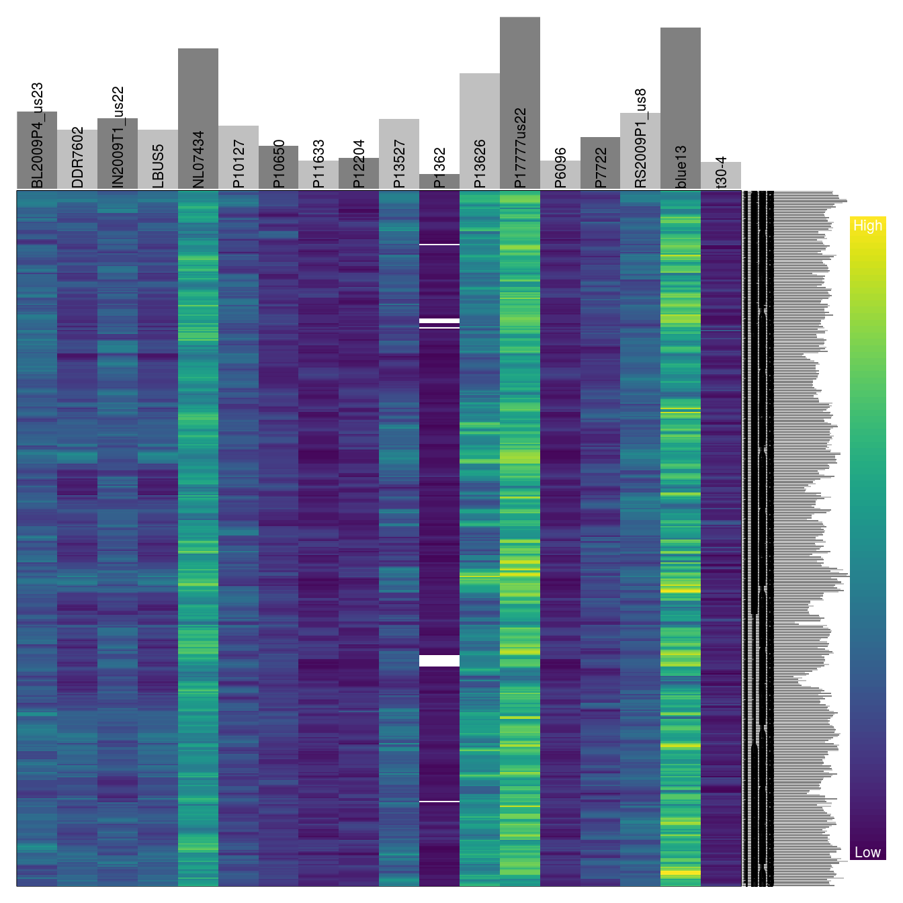
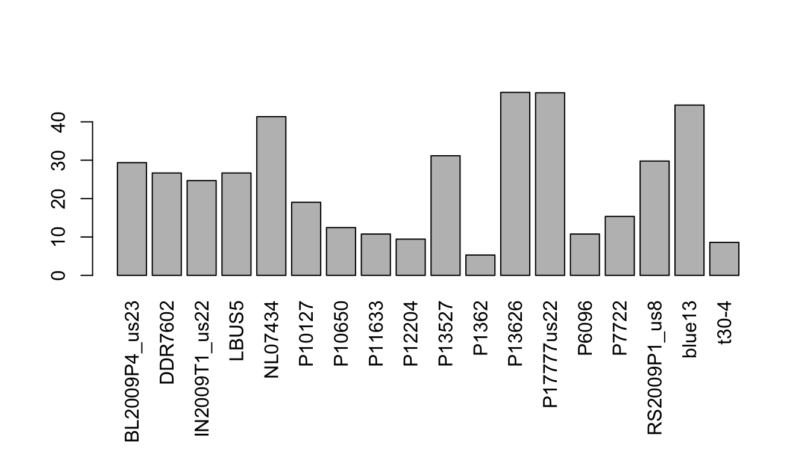

In the vignette ‘Visualizing VCF data I’ we began to explore how to plot information contained in variant call format (vcf) files. This perspective was mostly one of summaries over all samples for each variant. Here we build on this by exploring data based on each sample’s genotype information.
As in other vignettes, we begin by loading the example data.
library(vcfR)
vcf_file <- system.file("extdata", "pinf_sc50.vcf.gz", package = "pinfsc50")
dna_file <- system.file("extdata", "pinf_sc50.fasta", package = "pinfsc50")
gff_file <- system.file("extdata", "pinf_sc50.gff", package = "pinfsc50")
vcf <- read.vcfR(vcf_file, verbose = FALSE)
dna <- ape::read.dna(dna_file, format = "fasta")
gff <- read.table(gff_file, sep="\t", quote="")
chrom <- create.chromR(name="Supercontig", vcf=vcf, seq=dna, ann=gff, verbose=FALSE)
chrom <- masker(chrom, min_DP = 300, max_DP = 700)
chrom <- proc.chromR(chrom, verbose = FALSE)In the vignette ‘Visualizing VCF data I’ we explored summaries of variants made across all samples. If all samples are fairly homogenous in the qualities of these metrics, than a summary across all samples may be appropriate. However, if a few samples have very low quality, or some samples are exceptional, this may be masked by looking at summaries across all samples. By looking at the individual samples, these differences may be discovered.
In order to look at the per sample information, we first need to determine what sort of data we have there. We can use the function head() to summarize the information in our Chrom object.
head(chrom)## ***** Class chromR, method head *****
## Name: Supercontig
## Length: 1,042,442
##
## ***** Sample names (chromR) *****
## [1] "BL2009P4_us23" "DDR7602" "IN2009T1_us22" "LBUS5"
## [5] "NL07434" "P10127"
## [1] "..."
## [1] "P17777us22" "P6096" "P7722" "RS2009P1_us8"
## [5] "blue13" "t30-4"
##
## ***** VCF fixed data (chromR) *****
## CHROM POS ID REF ALT QUAL FILTER
## [1,] "Supercontig_1.50" "41" NA "AT" "A" "4784.43" NA
## [2,] "Supercontig_1.50" "136" NA "A" "C" "550.27" NA
## [3,] "Supercontig_1.50" "254" NA "T" "G" "774.44" NA
## [4,] "Supercontig_1.50" "275" NA "A" "G" "714.53" NA
## [5,] "Supercontig_1.50" "386" NA "T" "G" "876.55" NA
## [6,] "Supercontig_1.50" "462" NA "T" "G" "1301.07" NA
## [1] "..."
## CHROM POS ID REF ALT QUAL FILTER
## [22026,] "Supercontig_1.50" "1042176" NA "T" "A" "162.59" NA
## [22027,] "Supercontig_1.50" "1042196" NA "G" "A" "180.86" NA
## [22028,] "Supercontig_1.50" "1042198" NA "T" "G" "60.27" NA
## [22029,] "Supercontig_1.50" "1042303" NA "C" "G" "804.15" NA
## [22030,] "Supercontig_1.50" "1042396" NA "GA" "G" "1578.82" NA
## [22031,] "Supercontig_1.50" "1042398" NA "A" "C" "1587.87" NA
##
## INFO column has been suppressed, first INFO record:
## [1] "AC=32" "AF=1.00"
## [3] "AN=32" "DP=174"
## [5] "FS=0.000" "InbreedingCoeff=-0.0224"
## [7] "MLEAC=32" "MLEAF=1.00"
## [9] "MQ=51.30" "MQ0=0"
## [11] "QD=27.50" "SOR=4.103"
##
## ***** VCF genotype data (chromR) *****
## ***** First 6 columns *********
## FORMAT BL2009P4_us23
## [1,] "GT:AD:DP:GQ:PL" "1|1:0,7:7:21:283,21,0"
## [2,] "GT:AD:DP:GQ:PL" "0|0:12,0:12:36:0,36,427"
## [3,] "GT:AD:DP:GQ:PL" "0|0:27,0:27:81:0,81,1117"
## [4,] "GT:AD:DP:GQ:PL" "0|0:29,0:29:87:0,87,1243"
## [5,] "GT:AD:DP:GQ:PL" "0|0:26,0:26:78:0,78,1034"
## [6,] "GT:AD:DP:GQ:PL" "0|0:23,0:23:69:0,69,958"
## DDR7602 IN2009T1_us22
## [1,] "1|1:0,6:6:18:243,18,0" "1|1:0,8:8:24:324,24,0"
## [2,] "0|0:20,0:20:60:0,60,819" "0|0:16,0:16:48:0,48,650"
## [3,] "0|0:26,0:26:78:0,78,1077" "0|0:23,0:23:69:0,69,946"
## [4,] "0|0:27,0:27:81:0,81,1158" "0|0:32,0:32:96:0,96,1299"
## [5,] "0|0:30,0:30:90:0,90,1242" "0|0:41,0:41:99:0,122,1613"
## [6,] "0|0:36,0:36:99:0,108,1556" "0|0:35,0:35:99:0,105,1467"
## LBUS5 NL07434
## [1,] "1|1:0,6:6:18:243,18,0" "1|1:0,12:12:36:486,36,0"
## [2,] "0|0:20,0:20:60:0,60,819" "0|0:28,0:28:84:0,84,948"
## [3,] "0|0:26,0:26:78:0,78,1077" "0|1:19,20:39:99:565,0,559"
## [4,] "0|0:27,0:27:81:0,81,1158" "0|1:19,19:38:99:523,0,535"
## [5,] "0|0:30,0:30:90:0,90,1242" "0|1:22,22:44:99:593,0,651"
## [6,] "0|0:36,0:36:99:0,108,1556" "0|1:29,25:54:99:723,0,876"
##
## ***** Var info (chromR) *****
## ***** First 6 columns *****
## CHROM POS MQ DP mask n
## 1 Supercontig_1.50 41 51.30 174 FALSE NA
## 2 Supercontig_1.50 136 52.83 390 TRUE 17
## 3 Supercontig_1.50 254 56.79 514 TRUE 17
## 4 Supercontig_1.50 275 57.07 514 TRUE 17
## 5 Supercontig_1.50 386 57.40 509 TRUE 16
## 6 Supercontig_1.50 462 58.89 508 TRUE 17
##
## ***** VCF mask (chromR) *****
## Percent unmasked: 70.7
##
## ***** End head (chromR) *****Recall from the vignette ‘vcf data’ that the genotype information begins at column nine from the file. This column specifies the format of all subsequent columns. All columns subsequent to this column contain information for each sample where each column corresponds to a sample. We see form the output of head() that our genotype data contains GT:AD:DP:GQ:PL data. These abbreviations are defined in the meta portion of the file. Observation of the first few rows of genotype information shows the format as 1|1:0,7:7:21:283,21,0. These are colon delimited values, as in the format column. Because the genotypes are not strictly numeric (they contain a slash to delimit unphased data and a pipe to delimit phased data) we won’t be able to treat this as numeric information. Read depth (DP) is numeric, and we’ll use that in subsequent examples.
The genotype region of VCF data contains several values for each sample and each variant. We can extract one of these colon delimited values using the function extract.gt(). This function determines the position of the desired element in the FORMAT column and uses this information to extract the same position from all of the other samples in that row. This is performed on a row by row basis so that files containing heterogeneous FORMAT specifications can be processed. Here we’ve asked the function to convert the resulting matrix to a numeric matrix. This is because we’ve determined, above, that this is indeed numeric data. But be careful with this option! If the data are not numeric it will do its best to convert the data and will probably not throw an error. It’s up to the user (this means you) to make sure this is a reasonable decision.
dp <- extract.gt(chrom, element="DP", as.numeric=TRUE)
rownames(dp) <- 1:nrow(dp)
head(dp)## BL2009P4_us23 DDR7602 IN2009T1_us22 LBUS5 NL07434 P10127 P10650 P11633
## 1 7 6 8 6 12 6 4 6
## 2 12 20 16 20 28 9 8 11
## 3 27 26 23 26 39 22 8 11
## 4 29 27 32 27 38 22 7 10
## 5 26 30 41 30 44 18 11 11
## 6 23 36 35 36 54 18 20 18
## P12204 P13527 P1362 P13626 P17777us22 P6096 P7722 RS2009P1_us8 blue13
## 1 1 7 NA 13 14 6 NA 6 16
## 2 6 29 1 41 33 11 NA 21 31
## 3 6 47 3 58 58 11 NA 28 71
## 4 4 44 5 70 62 10 NA 35 63
## 5 NA 29 3 62 49 11 NA 38 60
## 6 1 37 4 48 52 18 NA 27 68
## t30-4
## 1 2
## 2 3
## 3 2
## 4 2
## 5 4
## 6 7Once we’ve extracted the desired element, we’ll want to visualize the resulting matrix of data. The head() statement above gives us a peak at what it looks like. But it doesn’t allow us to view the entire matrix. The function heatmap.bp() helps us to visualize a matrix of data.
heatmap.bp(dp[1001:1500,])The plot that results from heatmap.bp() shows samples in columns and variants in rows. Marginal barplots summarize sums of the rows and columns. The color ramp, at the right, is parameterized for continuous data. In the above plot, yellow is a high number of high quality bases violet is a low number of high quality bases. If you ask the function to visualize more values than the screen has pixels, some form of interpolation is performed. Because of this I suggest using this function for no more than about 1,000 variants.
The presence of zeros in a dataset presents a conundrum. Sometimes, the presence of zero valued data represents the positive determination that there is zero valued data. For example, if we went to the grocery store and at the checkout counter we could count that we have three bananas, two oranges but zero apples when we know the store had apples. This means that we know that we did not want any apples as opposed to the store not having apples, or perhaps we just forgot to look, or a number of other scenarios. Alternatively, the presences of zero valued data indicates that there is missing data. This would be similar to counting how many bananas and oranges are in our basket, but not reporting on the number of apples. We do not know if there are zero apples, or we just didn’t count the apples. For our sequence depth, a zero value may indicate that the nucleotide exists in the reference sequence but not in the resequenced sample. Alternatively, it may mean that the resequenced sample was not sequenced at sufficient depth to detect its presence. In the present example, we may interpret zero data as missing data. Therefore, we should re-encode zero data as NA data.
is.na(dp[na.omit(dp == 0)]) <- TRUEAnd re-visualize.
heatmap.bp(dp[1001:1500,])
There are some important differences among the two above plots. In the first plot there are missing data, but there are also sites where there is a read depth of zero. The difference is that in the first plot, zero data are coded as dark violet while missing data are coded as white (a color that is not present in the color ramp). In the second plot, the zero data were recoded as missing so they now stand out better. One of the downsides of the heatmap is that it tells up what is high valued or low, but it does not tell us the actual values. We can use a barplot to inform us of this information.
par(mar=c(8,4,4,2))
barplot(apply(dp, MARGIN=2, mean, na.rm=TRUE), las=3)
par(mar=c(5,4,4,2))Here we see that the mean number of high quality bases per variant is quite high for most samples. The sample p1362 appears to have an abundance of missing data in the heatmap. In the barplot we’ve validated that this sample lacks information. At the other end of the spectrum, the sample NL07434 has a high average coverage as seen in the heatmap, and in the barplot we can see that this value is just over 40.
Now that we know our way around our chromosome it may be time to make some decisions. Regions which do not meet our expectations may need extra work to make sure they are of high quality. Alternatively, we may simply wish to censor these regions and focus on the high quality fraction of the data. Once we’ve gained a familiarity with the data contained in our VCF file we can make informed decisions on how best to process it.
Copyright © 2017 Brian J. Knaus. All rights reserved.
USDA Agricultural Research Service, Horticultural Crops Research Lab.